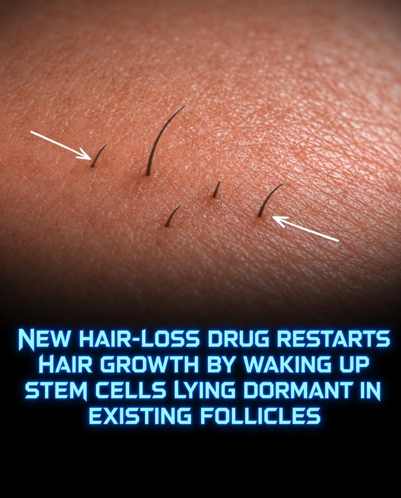

미국 펠라지 제약회사가 진행중인
휴먼중인 모낭 줄기세포를 PP405라는 물질로 다시 활성화시키는 탈모 치료제
임상 2a상 결과
4주 도포후 4주 휴지기 가진후 다시 4주 도포결과
탈모환자 78명중 31%의 환자의 휴면중인 모낭에서 모발이 자라남
현재 600명을 대상으로 신규 임상 테스트중
2027년 말경 임상테스트 완료예정 이후 FDA신청 후
상용화는 2028~2030년 예상

미국 펠라지 제약회사가 진행중인
휴먼중인 모낭 줄기세포를 PP405라는 물질로 다시 활성화시키는 탈모 치료제
임상 2a상 결과
4주 도포후 4주 휴지기 가진후 다시 4주 도포결과
탈모환자 78명중 31%의 환자의 휴면중인 모낭에서 모발이 자라남
현재 600명을 대상으로 신규 임상 테스트중
2027년 말경 임상테스트 완료예정 이후 FDA신청 후
상용화는 2028~2030년 예상
빡빡아, 또 속냐!
자라나라 머리머리
탈모약으로 버티다 저거 치료받으면 되냐
유전형 탈모는 모낭이 없어지는거 아니였냐
휴면중인 모낭입니다
모낭까지 다 뒤지는 남성형 유전성 탈모는 해당없습니다 ㅅㄱ
원래 털 없는 자리에도 되나? 솜털은 잇자나
스타트랙보면 은하간을 이동할수있는
대단한.기술이 있어도 대머리는 못고치던데 ...
유전이 문제지 뭐 ㅋㅋ
는 또 쥐만 풍성해졌습니다.
휴면중인 모낭에서 모발이 자라난다는 얘기는 이미 죽은 모낭은 소용없다는 얘기네..